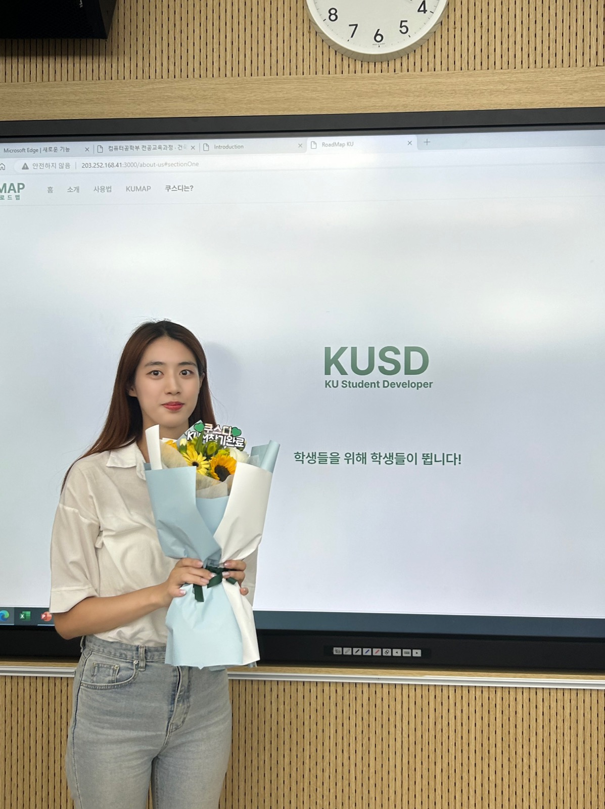
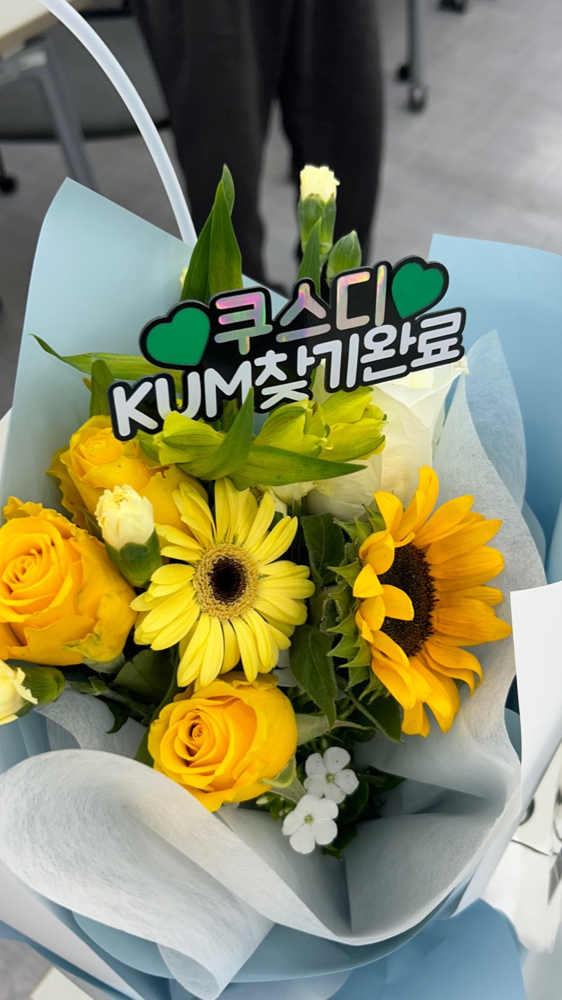
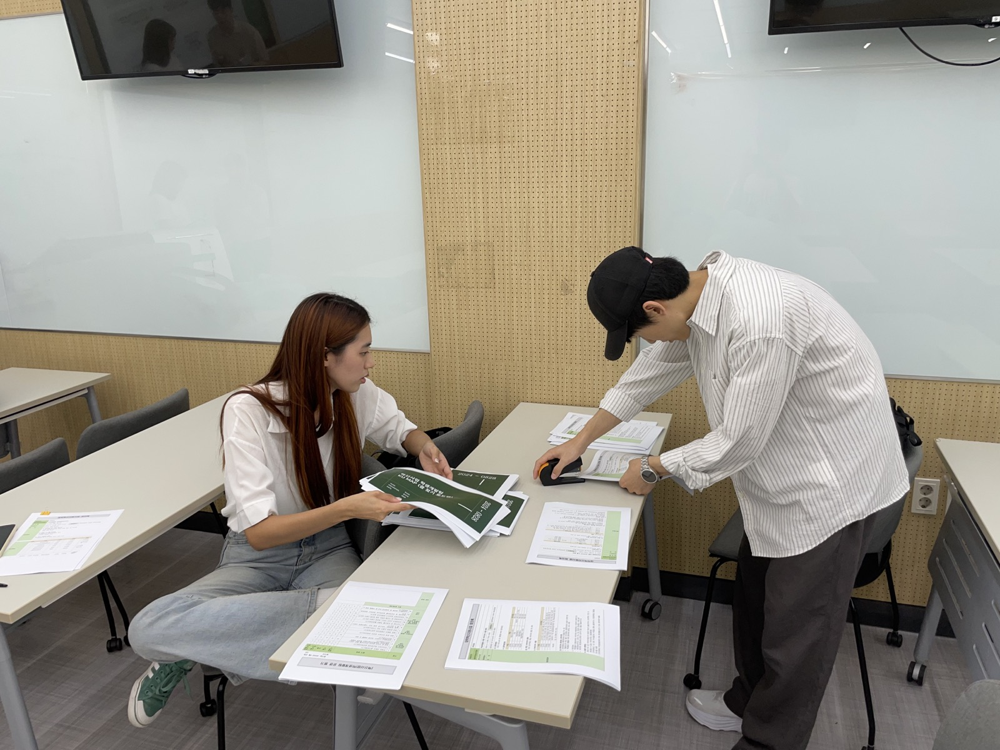
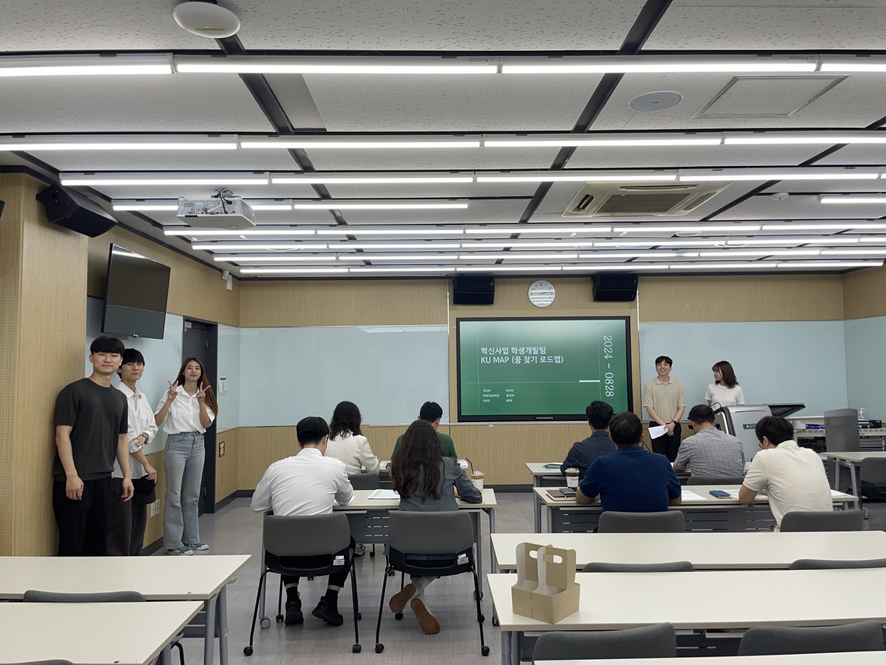
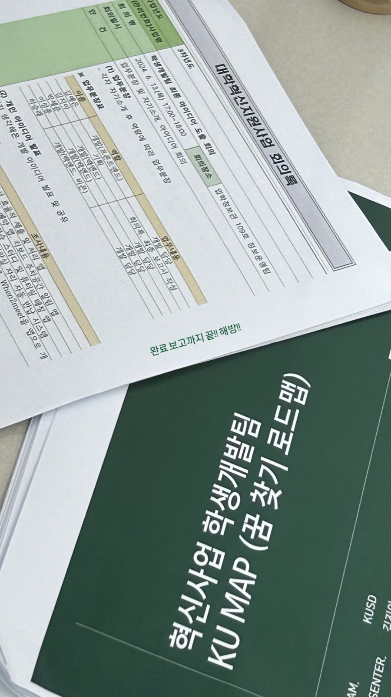
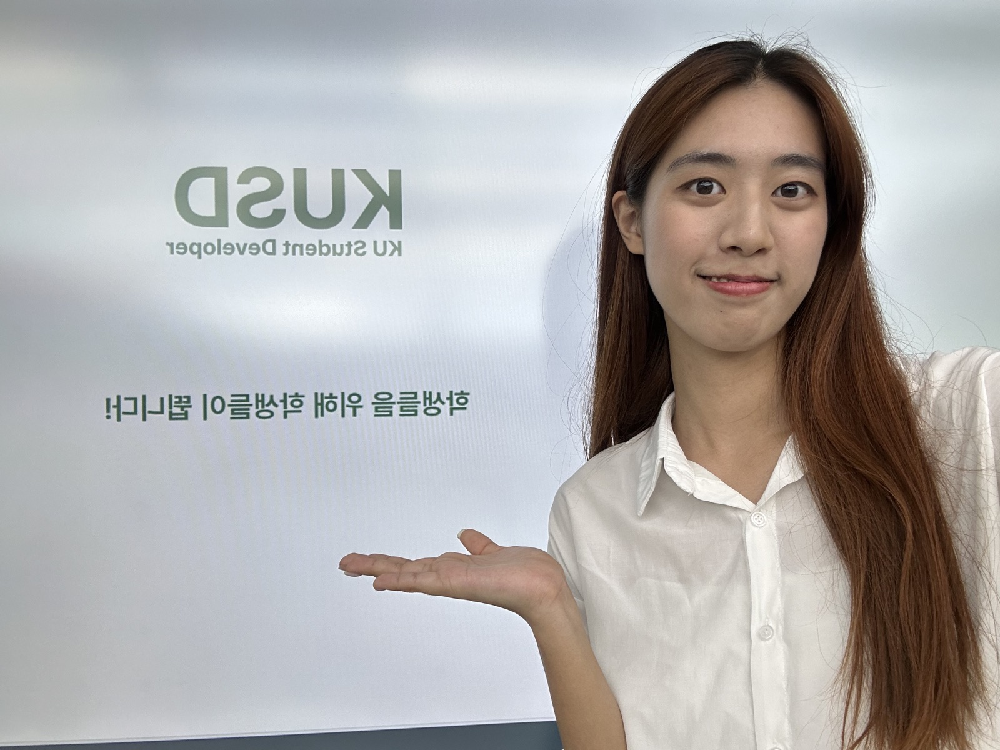
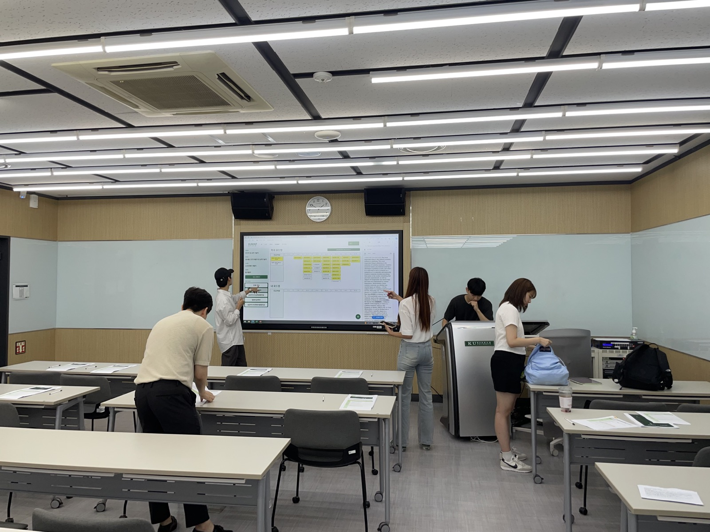

발표 현장








학생 관점에서 설계한 전공 역량 기반 로드맵 서비스. 학사팀·정보운영팀과 협업해 실제 사업화와 배포까지 이어졌습니다.
건국대학교의 기존 전공 로드맵 안내는 교직원 시선에서 기획·운영되어 왔습니다. 학생 입장에서는 학과별로 디자인이 다른 PDF, 클릭 가능 여부를 알 수 없는 UX, 강의 정보를 바로 확인할 수 없는 구조 등의 불편이 있었습니다.
학사팀·정보운영팀과 직접 협업하며 장애인 도보 네비게이션, KU Meet, 도서관 출입 시스템 등 여러 아이디어를 검토했고, 그중 학생들이 직접 사용하는 사이트의 문제를 해결할 수 있고 오픈 데이터로 개인정보 이슈 없이 구현 가능한 '꿈찾기 로드맵(현 KUMAP)'을 최종 방향으로 선정했습니다.
학과별로 상이한 PDF 디자인, 클릭 가능한지 알 수 없는 UX, 강의 정보를 바로 확인할 수 없음
학과별 로드맵을 통일된 디자인으로 제공, 직관적인 클릭으로 강의 정보를 바로 열람 가능
관심 직군을 입력하면 원전공/타전공 수업을 추천받고, 바로 '나의 로드맵'에 담아 학업 계획을 직접 설계할 수 있습니다.
학과마다 다르던 로드맵 디자인을 학기별·과목별 정렬로 통일하고, 2025 자유전공학부 신입생 기준 선택 과정을 8단계에서 2단계(25%)로 축소했습니다.
완성한 로드맵을 친구나 컨설턴트에게 공유해 함께 검토할 수 있습니다.
학사팀·정보운영팀과 협업하며 학생 니즈, 행정 조직의 제약(개인정보 보호, 부서 간 협업 여부), 기술적 구현 가능성을 함께 고려해 기획·설계했습니다. 개인정보 이슈를 고려해 오픈 데이터 기반으로 서비스를 설계했고, 단순 추천보다 학생이 직접 선택·수정할 수 있는 구조를 핵심 가치로 정했습니다.
개발 완료 후 실제 상용화되어 학교 공식 채널에 노출되었으며, 7개 대학 연합 '2024 대학혁신지원사업 우수사례 성과포럼'에서 우수 성과 사례로 선정되었습니다. 학생개발팀 인터뷰, 교내 뉴스, 유튜브 콘텐츠 등으로도 소개되었습니다.






